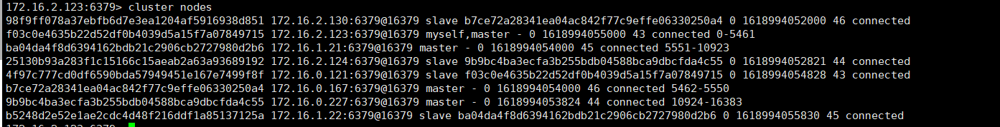
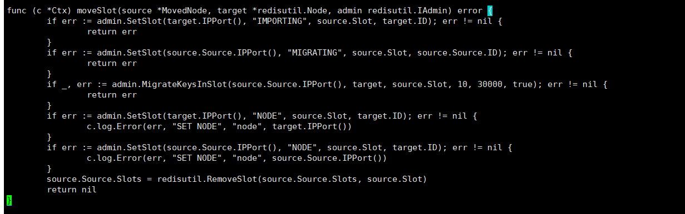
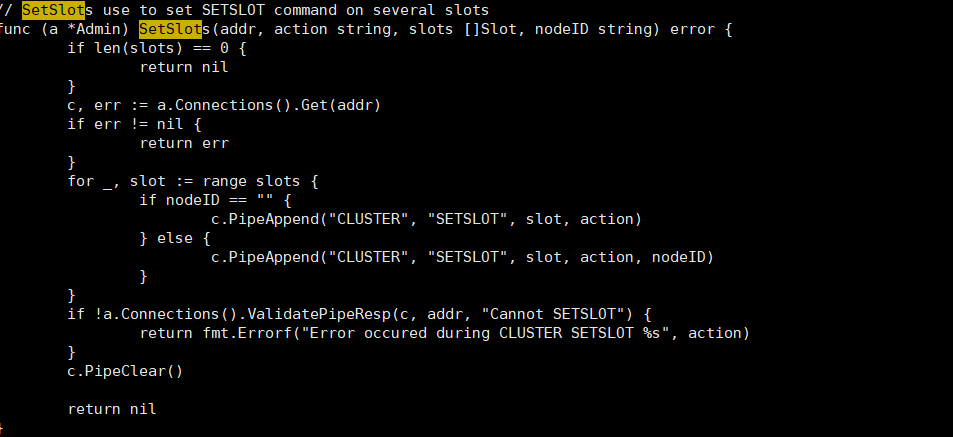
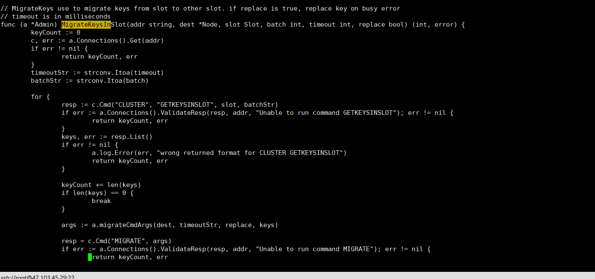
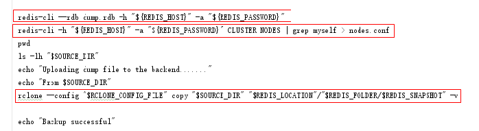
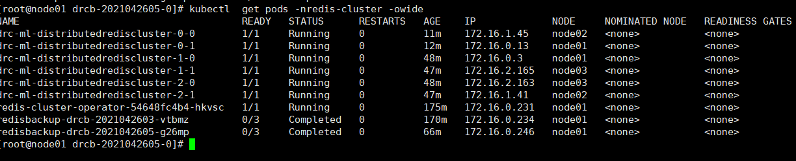
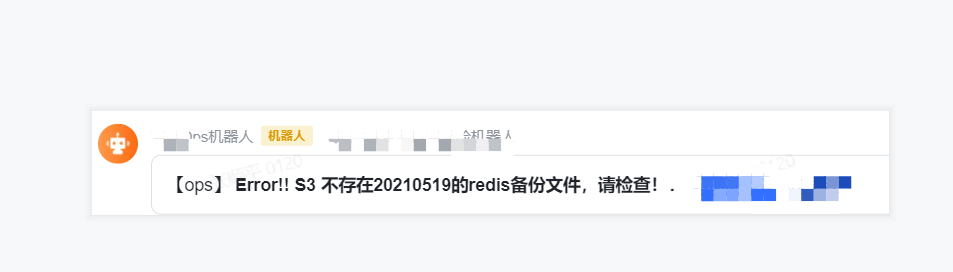
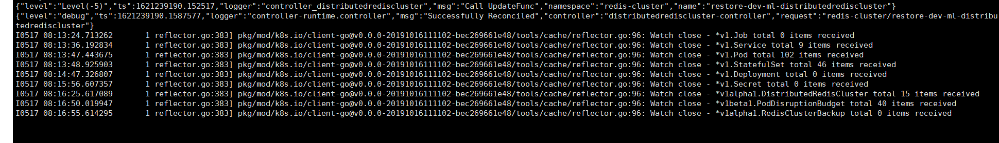

[toc]
先从CRD说起
redis-cluster-operator 项目自定义了两个crd资源 DistributedRedisCluster, RedisClusterBackup
在已经申请crd资源的k8s集群内可以通过以下命令查看
[root@node01 ~]# kubectl get crd |grep redis
distributedredisclusters.redis.kun 2020-10-16T10:58:47Z
redisclusterbackups.redis.kun 2020-10-16T10:58:47Z
也可以通过apiserver 资源查看命令kubectl api-resources|grep drc查看；drc，drcb为DistributedRedisCluster, RedisClusterBackup的shortname。
operator 保证集群服务配置的最终一致性
kubernetes operator 是通过list/watch 特定资源，进行一个loop调谐过程，通过比较对应crd自定义资源drc的spec和status状态，从而保证资源redis-cluster的最终一致性。
- operator pod可以通过以下命令查看
[root@node01 ~]# kubectl get pods -nredis-cluster|grep operator
redis-cluster-operator-78b45cdb6b-7lm5z 1/1 Running 3 8d
**Tips：**这里要说明下operator和k8s，redis-cluster的边界问题，Operator可以理解为只是会控制对应的k8s资源，例如cm，statefulset控制器配置等。Kubernetes和Operator不去介入Redis Cluster的高可用机制，若有冲突以Redis Cluster的为准。
集群管理
一、PDB托底redis实例pod可用性
redis-cluster-operator项目在落地redis-cluster集群的时候，会在k8s内针对每一个pod生成PDB资源pdb介绍。每一个pdb资源通过matchLabels的标签选择方式维护着statefulset的可用性。其默认配置maxUnavailable=1，从而保证redis-cluster的在自愿情况（及人工操作)下保证一个statefulset控制的pod副本数最大的不可用数只能为一个，防止误操作导致服务不可用。
[root@node01 ~]# kubectl get PodDisruptionBudget -nredis-cluster
NAME MIN AVAILABLE MAX UNAVAILABLE ALLOWED DISRUPTIONS AGE
drc-ml-distributedrediscluster-0 N/A 1 1 21d
drc-ml-distributedrediscluster-1 N/A 1 1 21d
drc-ml-distributedrediscluster-2 N/A 1 1 21d
二、redis-cluster主从分布
2.1 pod反亲和
在容器化部署时，同一分片的主从节点Pod不能调度在同一K8S节点，防止由于K8S节点宕机分片整体下线导致数据丢失，使用pod反亲和保证redis实例的主从副本分布在不同的node节点上。
定义好drc之后，redis-cluster-operator会在节点类生成管理redis实列的statefulset资源控制器。通过statefulset的方式控制数据的有状态存储，通过spec.affinity.podAntiAffinity的pod间的软亲和方式保证主从副本尽量分散到各个不同的node，(因为redis-cluster采用的master-slave机制，保证master和slave节点在不同的节点，从而保证数据的安全性）。
以drc-ml-distributedrediscluster-0 这个statefulset这个资源举个栗子:
其yaml文件定义如下：
spec:
affinity:
podAntiAffinity:
preferredDuringSchedulingIgnoredDuringExecution:
- podAffinityTerm:
labelSelector:
matchLabels:
redis.kun/name: ml-distributedrediscluster
topologyKey: kubernetes.io/hostname
weight: 100
这里使用了k8s的pod之间的反亲和。大致意思就是 drc-ml-distributedrediscluster-0这个statefulset控制器在创建pod的时候，以kubernetes.io/hostname为一个拓扑，及hostname相同的一个node节点为一个拓扑单位，创建的pod的时候最大可能的让两个pod副本不在同一个node上
2.2 故障之后，redis的master节点的重启
- 1.在drc对象的statefulset控制器里我们可以看到每次执行stop事件的时候，会执行prestop动作，及执行/conf/shutdown.sh脚本，当reids节点发生故障时，会触发prestop。
preStop:
exec:
command:
- /bin/sh
- /conf/shutdown.sh
/conf/shutdown.sh大概意思是，每次执行对pod容器执行stop事件时，都需要执行shutdown.sh，这个showdonw.sh脚本主要去判断自己是否是master角色，如果是是master角色，则向对应的slave节点发送Cluster FAILOVER命令，从而让对应的slave变成master。
### shutdown.sh 脚本内容如下：
#!/bin/sh
CLUSTER_CONFIG="/data/nodes.conf"
failover() {
echo "Do CLUSTER FAILOVER"
masterID=$(cat ${CLUSTER_CONFIG} | grep "myself" | awk '{print $1}')
echo "Master: ${masterID}"
slave=$(cat ${CLUSTER_CONFIG} | grep ${masterID} | grep "slave" | awk 'NR==1{print $2}' | sed 's/:6379@16379//')
echo "Slave: ${slave}"
password=$(cat /etc/redis_password)
if [[ -z "${password}" ]]; then
redis-cli -h ${slave} CLUSTER FAILOVER
else
redis-cli -h ${slave} -a "${password}" CLUSTER FAILOVER
fi
echo "Wait for MASTER <-> SLAVE syncFinished"
sleep 20
}
if [ -f ${CLUSTER_CONFIG} ]; then
cat ${CLUSTER_CONFIG} | grep "myself" | grep "master" && \
failover
三、集群伸缩管理
3.1. redis集群大小管理
drc资源有两个关键资源来控制redic-cluster集群大小：
spec.clusterReplicas： 负责控制着集群的一个master节点对应的slave的副本数 ，原生定义必须 >=1
spec.masterSize： 控制着集群的规模大小 spec.masterSize=3则表示启动了redis-cluster的master节点个数为3
查看redis-cluster对应的drc资源
[root@node01 ~]# kubectl get drc -nredis-cluster
NAME MASTERSIZE STATUS AGE
ml-distributedrediscluster 3 Healthy 21d
3.2 redis-cluster 扩缩容
修改spce.masterSize 。redis opartor通过内嵌的实现了slot的扩容和缩容策略，具体的可以查看源码分析，这里就不一一例举了。
比如目前的masterSize=3，想扩容及把masterSize改成4即可，想缩容把masterSize改成2即可。
3.3 reids slots迁移流程
- 对目标节点发送 cluster setslot importing 命令，让目标节点准备导入槽的数据。
- 对源节点发送 cluster setslot migrating 命令，让源节点准备迁出槽的数据。
- 源节点循环执行 cluster getkeysinslot 命令，获取count个属于槽slot的键。
- 在源节点上执行 migrate “” 0 keys <keys…> 命令，把获取的键通过流水线（pipeline）机制批量迁移到目标节点。
- 重复执行步骤3和步骤4直到槽下所有的键值数据迁移到目标节点。向集群内所有主节点发送cluster setslot node 命令，通知槽分配给目标节点。为了保证槽节点映射变更及时传播，需要遍历发送给所有主节点更新被迁移的槽指向新节点。
验证：扩容缩容之后，可以通过cluster nodes或者cluster slots方式查看新建的pods节点是否被分配slots，或者从cluster nodes中去掉信息

3.4 redis-cluster-operator实现的slots迁移源码
主要逻辑在redis-cluster-operator/pkg/controller/clustering/rebalance.go 如下：

主要逻辑：分别调用了redis-cluster-operator/pkg/redisutil/admin.go中的SetSlots，MigrateKeysInSlot函数。
SetSlots 分别执行了 cluster setslot importing cluster setslot migrating 命令

MigrateKeysInSlot，for循环执行执行 cluster getkeysinslot 命令 和执行 migrate “” 0 keys <keys…> 命令

由此可以看出，redis-operator-cluster对节点的扩缩容，其实也是调用了Redis 本身的Cluster命令。因此用operator触发的slots迁移跟传统的通过redis-cli的方式迁移如出一辙。
四、redis-cluster 存储管理
4.1 pv/pvc pod 持久化
目前生成落地redis-cluster的集群使用的是通过向openebs提供的storageclass申请pv，从而实现pvc和pv绑定，达到pod的数据持久化如下。drc资源如下，定义storageclassname ，可以通过kubectl get drc -nredis-cluster -oyaml查看
storage:
class: openebs-hostpath
size: 10Gi
type: persistent-claim
定义完之后提交申请在statefulset资源中生成如下配置
volumeClaimTemplates:
- apiVersion: v1
kind: PersistentVolumeClaim
metadata:
creationTimestamp: null
labels:
managed-by: redis-cluster-operator
redis.kun/name: ml-distributedrediscluster
statefulSet: drc-ml-distributedrediscluster-0
name: redis-data
spec:
accessModes:
- ReadWriteOnce
resources:
requests:
storage: 10Gi
## 向openebs的存储申请pv
storageClassName: openebs-hostpath
volumeMode: Filesystem
值得注意的时候，如果使用pv 的RECLAIM POLICY 尽量使用Retain，不建议使用delete。（由于nfs和openebs存储目前不支持pv的
delete事件，因此这两种引擎使用pv的delete和retain策略的效果一致，都需要手动删除pv.）
4.2 redis-cluster集群备份
原生备份方案：目前ucloud 提供的redis-cluster-operator提供的备份方案支持本地备份到pv和远程备份到s3，其实现方式都是通过list/watch drcb资源，通过读取drcb资源获取对应的drc集群的一些信息，创建一个job任务进行一次性备份。
不采用原生的备份原因：
-
原生方案提供的备份方案，在进行rdb dump备份方案时只针对master节点备份，而实际情况下我们备份策略是对slave节点进行备份。
redis-cluster-operator/pkg/controller/redisclusterbackup/sync_handler.go... for _, node := range cluster.Status.Nodes { if node.Role == redisv1alpha1.RedisClusterNodeRoleMaster { if i == masterNum { break } folderName, err := backup.RemotePath() ...如果需要备份slave节点把这段代码改 即可
if node.Role == redisv1alpha1.RedisClusterNodeRoleSlave -
本地备份存储的位置不固定
-
备份节点不固定，虽然可以加nodeselector固定 实现如下
func (r *ReconcileRedisClusterBackup) getBackupJob(reqLogger logr.Logger, backup *redisv1alpha1.RedisClusterBackup, cluster *redisv1alpha1.DistributedRedisCluster) (*batchv1.Job, error) { // add drcb select node to backup rdp files jobPostion:=make(map[string]string) jobPostion["drcback"]="yes" ... ... Spec: batchv1.JobSpec{ ActiveDeadlineSeconds: backup.Spec.ActiveDeadlineSeconds, Template: corev1.PodTemplateSpec{ Spec: corev1.PodSpec{ NodeSelector: jobPostion, ... -
pv不固定，因为触发备份job是通过drcb资源的更新，这样一来生成pv名称会变，会导致redisback的位置不固定
-
不支持cronjob策略，及不能满足日常定时备份策略
-
-
远程备份到s3原生的备份策略报错，原生包不正确。。。。
自定义脚本备份：
redis-cluster-operator脚本里备份做了这几件事，参考他的代码实现

自定义redisback.sh脚本，备份slave节点，并上传到s3. 内容如下：
k8sconfig="/root/.kube/config"
slaveip=$(kubectl --kubeconfig=$k8sconfig get drc -nredis-cluster -oyaml|grep Slave -B 8|grep "ip: "|awk -F ':' '{print $2}')
[ $? -ne 0 ] && echo "visit k8s failed" && exit 1
echo $slaveip
backupdir="/data/redisbakup"
now=`date '+%Y%m%d_%H'`
backupdir_current=$backupdir/"redis_slave_bak"$now
mkdir -p $backupdir_current
## check
# 判断磁盘使用百分比, 超过设置值不再执行备份
data_use_max=85
data_use=$(df /data/ | tail -1 | awk '{print $5}'| awk -F'%' '{print $1}')
if [[ $data_use -gt $data_use_max ]]; then
echo "/data dir use "$data_use"%, exit script"
exit -1
fi
## 测试可用
for i in $slaveip
do
redis-cli -r 3 -h $i ping &>/dev/null
if [ $? -ne 0 ];then
echo "err: redis instance $i ping out "
exit 1
fi
done
##备份 slave rdp 到本地
for i in $slaveip
do
podname=$(kubectl get drc -nredis-cluster -oyaml|grep "ip: $i" -A 5|grep podName|awk -F ": " '{print $2}')
redis-cli --rdb $backupdir_current/"redis.dump.$podname".rdb -h $i
done
## 上传到s3
if [ -d "$backupdir_current" ];then
cd $backupdir
tar -jcf ${backupdir_current}.tar $backupdir_current
[ $? -eq 0 ] && rm -fr ${backupdir_current}
## 备份到s3
/usr/local/bin/aws s3 cp ${backupdir_current}.tar s3:XXXXXXXX --profile ops
if [ $? -ne 0 ];then
echo "upload to aws fialed"
fi
fi
**Tips：**经过测试当dump 4G的rdb文件时，需要的磁盘的吞吐量大概在50M/s,因此对于redis的dump操作要使用规格比较好的磁盘，并测试下最大的吞吐量。
4.3 redis restore
原生的方案是通过指定pv的方式恢复。
restore.yaml
apiVersion: redis.kun/v1alpha1
kind: DistributedRedisCluster
metadata:
annotations:
# if your operator run as cluster-scoped, add this annotations
redis.kun/scope: cluster-scoped
name: example-restore
spec:
init:
backupSource:
name: example-redisclusterbackup
namespace: default
不选择用原生的方式restore的原因：
-
我们用的localpv（如果遇到pv，pvc存在的情况下，restore经常会出现
[ x node(s) had volume node affinity conflict]报错，且恢复麻烦； -
当备份数据在同一个pv中的时候，恢复会出现异常。
-
原生恢复方式，是针对整个集群，而实际restore的场景一般是，负责一个区间的slots的主从宕机的情况。
因此原生的restore_frompvc的方式并不适合我们。
自定义恢复
redis RDB restore原理：
RDB文件的载入工作是在服务器启动时自动执行的，没有专门用于载入RDB文件的命令，只要Redis服务器在启动时检测到RDB文件存在，它就会自动载入RDB文件，服务器在载入RDB文件期间，会一直处于阻塞状态，直到载入工作完成为止。
当appendonly 设置成yes 时候不会将dump.rdb文件中的数据恢复，因此需要将appendonly设置为no
因此在集群额外添加一个cm资源redis-cluster-ml-distributedrediscluster-restore 其内容与operator生成的redis-cluster-ml-distributedrediscluster 内容一致，唯一的区别及设置**appendonly=no**
[root@node01 drcb-2021042605-0]# kubectl get cm -nredis-cluster
NAME DATA AGE
redis-admin 1 192d
redis-cluster-ml-distributedrediscluster 3 50m
redis-cluster-ml-distributedrediscluster-restore 3 42m
redis-cluster-operator-lock 0 177m
举个例子：
集群pods如下：

当主从实列drc-ml-distributedrediscluster-0-0 和drc-ml-distributedrediscluster-0-1数据丢失后，恢复步骤：
-
步骤一： 将备份的slave节点的rdb.dump文件拷贝到
drc-ml-distributedrediscluster-0-0和drc-ml-distributedrediscluster-0-1对应的pv目录下 -
步骤二： 修改pod对应的 statefulset 资源，drc-ml-distributedrediscluster-0 将cm 设置成
redis-cluster-ml-distributedrediscluster-restore及关闭appendonly -
步骤三： 待pod启动完成之后，连进去看keys是否恢复
-
步骤四： 步骤三确认ok之后，重复步骤二，将
redis-cluster-ml-distributedrediscluster-restore变成原生redis-cluster-ml-distributedrediscluster，让pod重新启动，pod会顺序启动，到此redis restore完成。
远程备份恢复
Bug修复
原生的程序执行s3 备份和restore的时候，会出现如下等bug，目前已经修复，代码提交到内网gitlab仓库。bug报错如下
phase: Failed
reason: |-
GetBucketLocation: RequestError: send request failed
caused by: Get "https://s3.us-east-1.amazonaws.com.cn/ops-s3-storage?location=": net/http: invalid header field value "AWS4-HMAC-SHA256 Credential=\x00\xa2\x00Um\x8a\x18\x04\aem\xd2e#8/20210508/us-east-1/s3/aws4_request, SignedHeaders=host;x-amz-content-sha256;x-amz-date, Signature=86b3bc48251cd36900093e10671be2b8b9349b2d23e37752d57ce95e53a59f1d" for key Authorization
S3 远程Backup原理
Operator 会 Watch 集群所有的 RedisClusterBackup 实例变化，当用户提交一个备份的 CR 之后，Operator 会：
-
创建一个 Kubernetes batch job，根据 Redis 集群分布数，在 job 中注入相同数量的 container，每个 container 向一个 Slave（原生是Master节点，现在已经改为Slave节点）发起备份请求，设置开始时间及备份状态。
-
同步完成 RDB 文件后，将 Redis 集群每个分片的 RDB 文件和 cluster-config-file(记录节点slots信息) 上传到对象存储，同时将 CR 的状态置为 Succeeded，设置完成时间。redis集群备份的快照和节点元数据信息，上传到对象存储后，有统一的路径，当前的规则是：redis/{Namespace}/{RedisClusterName}/{StartTime}/{BackupName}-x 比如一个备份一个在 default 命名空间的名为 redis-cluster-test 的 Redis 集群（集群含有三个 master 节点），备份名为 backup , 备份开始时间为 20191101083020这样的格式。
每个master节点备份的快照和节点元数据信息会存储在上述路径，用户可以到相应的 bucket 中查看。执行如下命令接口
[root@node01 MTWB]# aws s3 ls ops-s3-storage/produce-rediscluster-backup/redis/redis-cluster/ml-rediscluster/20210519081753/ --profile ops
PRE 20210519-0017-bak-0/
PRE 20210519-0017-bak-1/
PRE 20210519-0017-bak-2/
PRE 20210519-0017-bak-3/
PRE 20210519-0017-bak-4/
PRE 20210519-0017-bak-5/
s3远程Restore 原理
从备份恢复和创建步骤不同，分为两阶段，第一阶段同步数据，从快照启动 Master 节点；第二阶段启动 Slave 节点。
- 设置
DistributedRedisCluster.Status.Restore.Phase=Running，根据备份信息，创建与备份集群切片数相同的 Statefulset， 设置 Replicas 为 1，只启动 master 节点，注入 init container，init container 的作用是拉取对象存储上的快照数据。 - 等待第1步同步数据完成，master 启动完成后，设置
DistributedRedisCluster.Status.Restore.Phase=Restart，移除 init container 后等待节点重启。 - 第2步完成之后，增加每个分片的副本数调大 Statefulset 的 Replicas，拉起 Slave 节点，设置
DistributedRedisCluster.Status.Restore.Phase=Succeeded， 等待所有 Pod 节点状态变为 Runing 之后，设置每个 Statefulset 的 Slave 节点 replicate Master 节点，加入集群。
Backup步骤：
-
cd /data/UseDrcbToBakRedis/;bash CronDrcbBak.shCrontab 执行脚本任务，根据日期定时在集群创建定时job，备份redis数据到s3上[root@node01 MTWB]# kubectl get drcb -nredis-cluster NAME AGE PHASE 20210517-0158-bak 2d2h Succeeded 20210518-0100-bak 27h Succeeded 20210518-0334-bak 24h Succeeded 20210518-2334-bak 4h33m Succeeded 20210518-2343-bak 4h24m Running -
cd /data/UseDrcbToBakRedis/;bash CronCheckDrcb.shCrontab 定时巡检Drcb 任务是否有异常分三个维度检查 1.创建任务是否失败，2.执行任务是否失败，3.执行成功后，s3是否存在。如有异常则发送报警到飞书群，飞书截图如下：

值得注意的是
Backup的pod 运行在 带有 drcback=yes的节点，因此需要对node节点打上 drcback=yes的label。 对节点的磁盘要求非常高，目前生产redis 执行backup的时候**，磁盘写入i/o达到200MB/s**
Restore步骤：
-
在原集群的drc资源里添加如下init配置,这里命名为restore.yaml
init: backupSource: name: 20210516-2329-backup #drcb 的name namespace: redis-cluster -
执行
apply -f restore.yaml恢复清单，向集群提交restore 资源申请，这个时候会在k8s内创建一个新的drc 集群资源（新集群的名字尽量与就集群的名字不一样，因为用的localpv 的方式，所以防止pvc名字一样，指定的文件目录一样） -
kubeclt log -f operator-pod -nredis-cluster查看 operator，当发现如下的日志的时候，说明集群已经恢复完成。

可以通过 redis-cli -h $Nodeip cluster nodes 查看节点信息，一般情况这个时候只有Master节点存在，没有slave节点，是因为原生的又一个bug，yaml中有init字段后，operator会进行恢复操作，当恢复完成之后，operator很难watch到cr的变化，则不会去执行创建slave节点的操作。当发现如上日志，且 执行cluster nodes 发现slot信息已经完整之后，将步骤一添加的init字段删掉，这个时候opeator会感受到cr的变化，执行创建slave节点。
五、基于kube-prometheus operator的监控方案落地
5.1 添加redis metrics抓取
operator 默认会创建一个servicemonitor的资源,用户prometheus operator方案的抓取。
redis-cluster-operator/cmd/manager/maing.go 默认定义servicemonitor资源如下
// CreateServiceMonitors will automatically create the prometheus-operator ServiceMonitor resources
// necessary to configure Prometheus to scrape metrics from this operator.
services := []*v1.Service{service}
_, err = metrics.CreateServiceMonitors(cfg, namespace, services)
if err != nil {
log.Info("Could not create ServiceMonitor object", "error", err.Error())
// If this operator is deployed to a cluster without the prometheus-operator running, it will return
// ErrServiceMonitorNotPresent, which can be used to safely skip ServiceMonitor creation.
if err == metrics.ErrServiceMonitorNotPresent {
log.Info("Install prometheus-operator in your cluster to create ServiceMonitor objects", "error", err.Error())
}
}
可以通过如下命令查看operator 创建redis 生成的servicemonitor资源
[root@node01 manager]# kubectl get servicemonitor -nredis-cluster
NAME AGE
redis-cluster-operator-monotor 174d
servicemonitor 通过 namespaceSelector和标签选择selector的方式跟service资源关联
endpoints:
- interval: 15s
port: metrics
namespaceSelector:
matchNames:
- redis-cluster
selector:
matchLabels:
app: redis-cluster-monotor
name: redis-cluster-monotor
创建redis的监控service 内容如下：
apiVersion: v1
kind: Service
metadata:
labels:
app: redis-cluster-monotor
name: redis-cluster-monotor
name: ml-redis-cluster-monotor
namespace: redis-cluster
spec:
ports:
- name: metrics
port: 9100
protocol: TCP
targetPort: 9100
selector:
managed-by: redis-cluster-operator
redis.kun/name: ml-distributedrediscluster
sessionAffinity: None
type: ClusterIP
注意的是如果要开启监控，那么redis的drc资源里必须添加monitor选项,内容如下：
monitor:
image: oliver006/redis_exporter
prometheus:
port: 9100
resources: {}
5.2 添加prometheus Rules 监控报警规则
基于prometheus operator 方案中，获取prometheus rules的规则是通过定义在Prometheus资源中,可以通过
kubectl get prometheus -nmonitoring k8s -oyaml查看 ，及通过ruleSelector选项选择PrometheusRule资源，且标签为prometheus: k8s 和 role: alert-rules
ruleSelector:
matchLabels:
prometheus: k8s
role: alert-rules
定义redis-cluster-rule.yaml示例如下：
apiVersion: monitoring.coreos.com/v1
kind: PrometheusRule
metadata:
labels:
prometheus: k8s
role: alert-rules
name: redis-cluster-rules
namespace: monitoring
spec:
groups:
- name: redis-cluster.rules
rules:
- alert: redis down
annotations:
description: redis instance is down
summary: redis down (instance {{ $labels.instance }})
value: '{{ $value }}'
expr: redis_up == 0
for: 30s
labels:
name: redis
severity: error
...
TIPS：operator默认给prometheus实例的serviceaccount是放开了权限，当servicemonitor，svc设置完之后，等待一段时间发现prometheus 的targets无显示添加的监控项，可以看下prometheus的logs查找，一般情况下可以看看binding的clusterrole或者role是否有访问集群资源的权限。
目前对redis集群的监控方案，包括redis的健康状态，redis-cluster的主从状态，数据dump状态进行监控，具体的可以通过如下命令查看
kubectl get prometheusrules -nmonitoring redis-cluster-rules -oyaml
六、redis-cluster集群使用过程中的注意事项
6.1 Redis的Linux系统优化
-
vm.overcommit_memory
设置vm.overcommit_memory=1，防止极端情况下，会造成fork失败。
echo "vm.overcommit_memory=1" >> /etc/sysctl.conf sysctl vm.overcommit_memory=1说明：
vm.overcommit_memoy=0 ：表示内核将检查是否有足够的可用内存。如果有足够的可用内存，内存申请通过，否则内存申请失败，并把错误返回给应用进程 vm.overcommit_memoy=1 ：表示内核允许超量使用内存直到用完为止 vm.overcommit_memoy=2 ：表示内核决不过量的(“never overcommit”)使用内存，即系统整个内存地址空间不能超过swap+50%的RAM值，50%是overcommit_ratio默认值，此参数同样支持修改如果vm.overcommit_memory=0，代表如果没有可用内存，就申请内存失败，对应到Redis就是fork执行失败，在Redis的日志会出现：
Cannot allocate memoryRedis建议把这个值设置为1，是为了让fork能够在低内存下也执行成功。
-
Transparent Huge Pages
Redis建议修改Transparent Huge Pages (THP)的相关配置，Linux kernel在2.6.38内核增加了Transparent Huge Pages (THP)特性 ，支持大内存页(2MB)分配，默认开启。当开启时可以降低fork子进程的速度，但fork之后，每个内存页从原来4KB变为2MB，会大幅增加重写期间父进程内存消耗。同时每次写命令引起的复制内存页单位放大了512倍，会拖慢写操作的执行时间，导致大量写操作慢查询。例如简单的incr命令也会出现在慢查询中。因此Redis日志中建议将此特性进行禁用，禁用方法如下：
echo never > /sys/kernel/mm/transparent_hugepage/enabled
-
somaxconn
在/etc/sysctl.conf中添加,修改默认somaxconn=128值
net.core.somaxconn = 65535